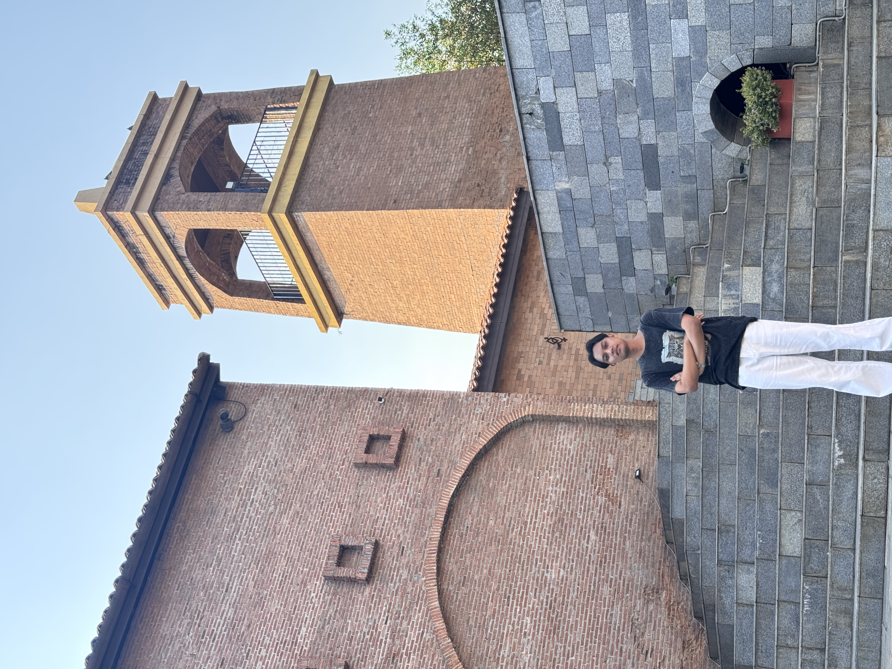

About Me
- Phone number: 0968191419
- Line ID: kabtan44
- Instagram: _suwan_naphum
- Facebook: Suwannaphum Prungchit
What I Built
This website is a one-page Learning Portfolio designed to introduce myself and summarize what I learned from Assignment 1.
The main sections of the website include:
- About Me.
- What I Built.
- How I Built It.
- Reflection.
How I Built It
The website development process is as follows:
- Plan the structure of the webpage.
- Create the structure using HTML.
- Style the webpage using CSS.
- Test the website in a web browser.
The tools used include:
- Visual Studio Code.
- HTML CSS.
- Learning materials.
Reflection
Problems or Challenges
At first, I was still confused about how to structure HTML and connect the CSS file. However, after trying to make changes and fix the code several times, I gained a better understanding of how to use relative paths.
What I Learned
I learned that HTML is used to create the structure of a website, while CSS is used to style and format the website to make it look more attractive.
What I Want to Improve
If I have the opportunity to continue developing the website, I would like to add Responsive Design so that the website works well on mobile devices. I would also like to add a Portfolio page to showcase my future projects and work.